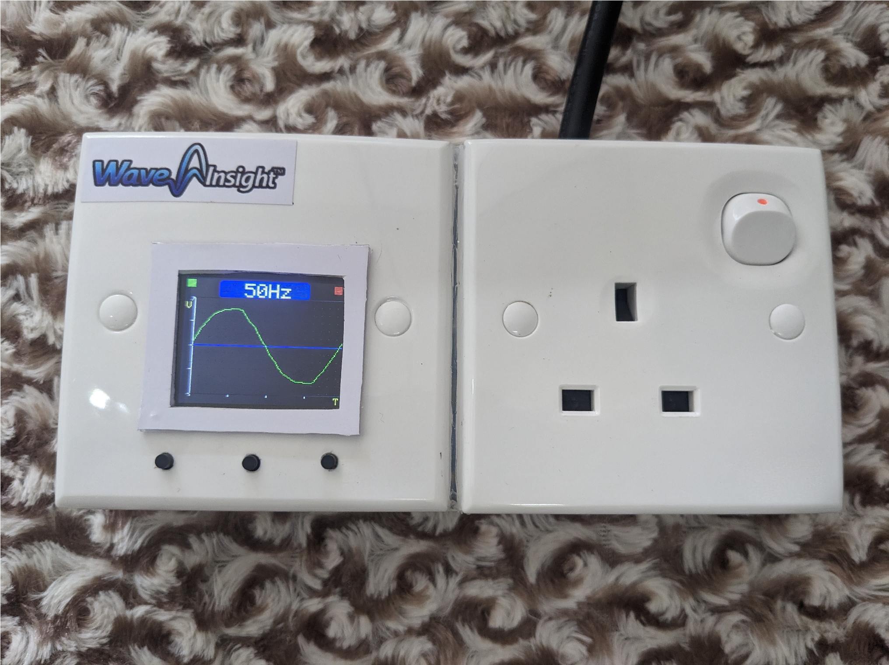
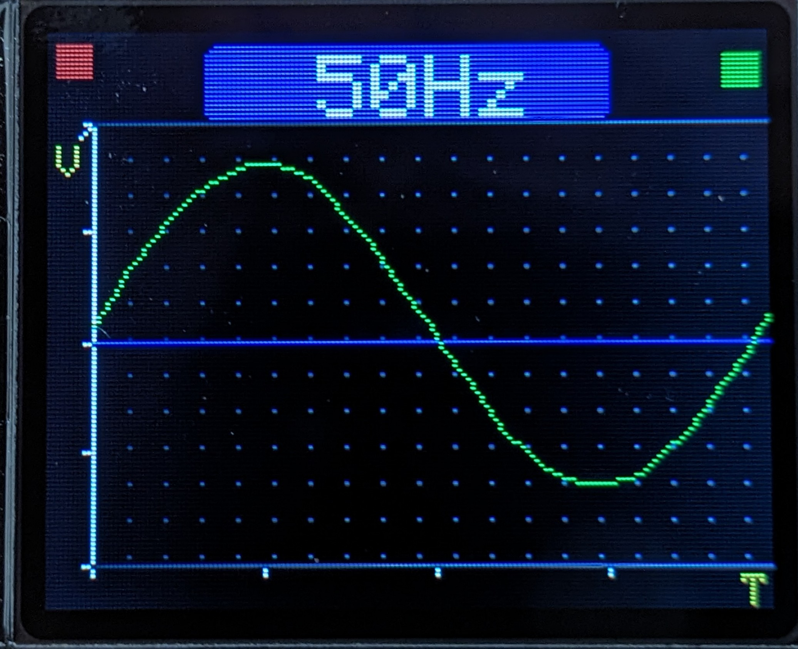
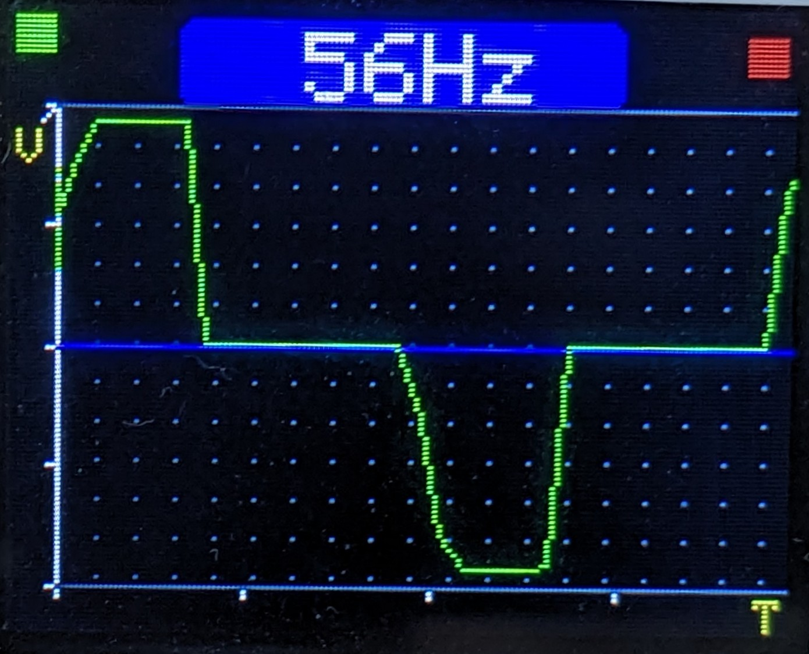

Wave Insight is a compact waveform analyzer designed to visualize and compare AC waveforms from different power sources.
It helps technicians and engineers observe waveform changes, compare reference signals, and identify waveform differences quickly.
Up to 200Hz
Main analyzer unit
Complete operating guide
Product warranty information
Captured AC waveforms using the Wave Insight AC Waveform Analyzer. Examples below demonstrate different power source characteristics.

Clean and stable AC waveform with minimal distortion. Ideal for sensitive electronic equipment.

Stepped waveform with noticeable harmonic content. Common in low-cost inverters.

Typical portable generator waveform showing minor frequency and voltage variations.

Waveform affected by electrical noise or abnormal power conditions.